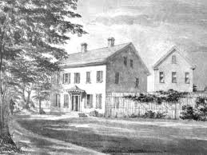
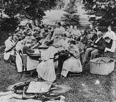

EXPERIMENTS IN VIRTUE:
The Rise of the American Utopias
Utopianism, the aspiration to create a better, perfect society, swept across the American landscape in the early 1800s. Seeking to escape the perceived corruptions of modern life, brave souls set up communities separate from society to improve their lives through the sharing of property, labor, and family life. These organizers hoped to promote virtue and inspire the world outside their fences.
New Harmony & Brook Farm
A view of New Harmony, Indiana; Robert Owen's experiment in social cooperation.In 1825, British reformer Robert Owen established New Harmony in Indiana. He sought a cooperative society of 1000 industrious people to pursue science away from capitalist pressures.
 Brook Farm, West Roxbury, Massachusetts.Meanwhile, in 1841, Brook Farm in Massachusetts saw 80 Transcendentalists attempt to merge physical labor with intellectual pursuit.
The Oneida Colony (1848)
 The residents at the Oneida Community, New York.Founded by John Humphrey Noyes, this community practiced "complex marriage," considering all members married to one another. Monogamy was rejected, and decisions on childbearing were managed by committee.
Fruitlands: A Stricter Path
The original farmhouse at Fruitlands, Harvard, Massachusetts.Bronson Alcott founded Fruitlands with severe rigor: no meat, no animal labor, and only water. The project collapsed under the weight of a harsh winter after less than seven months.
Most of these 50+ communities were short-lived, failing due to financial instability.